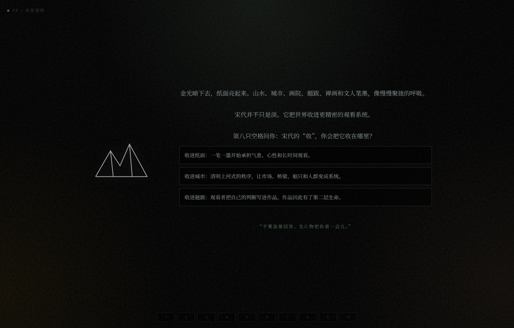
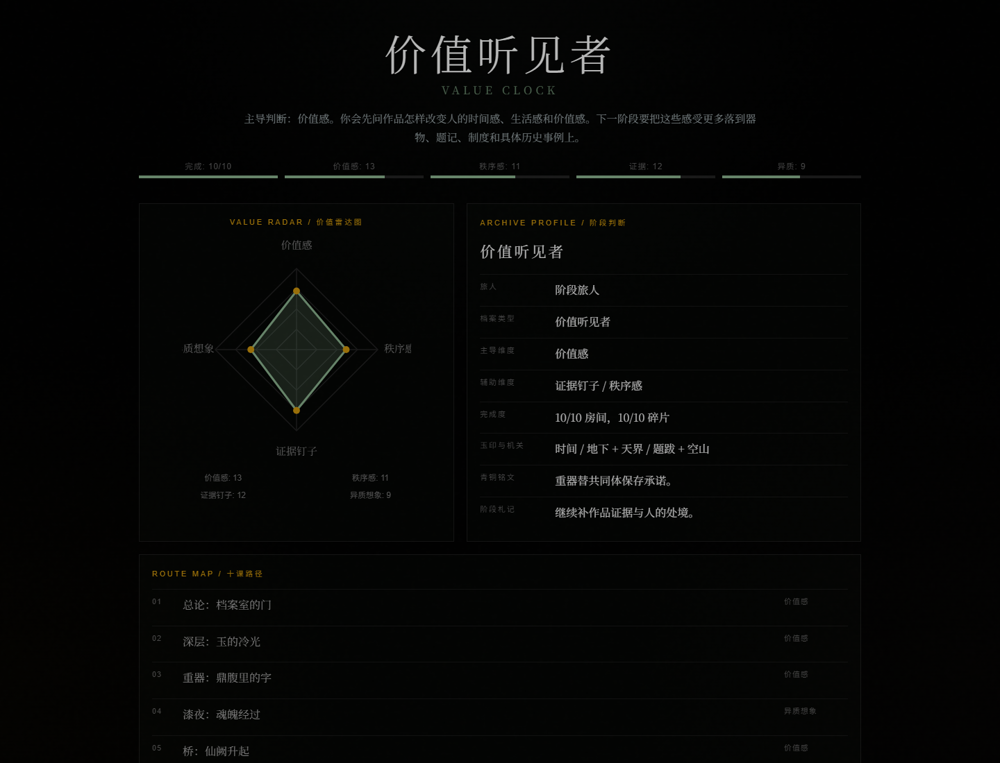

感受如何进入判断
王美丽此前的视觉实践和生活美学记录，被整合为她进入艺术史课的观看底色。她在课程中的关键线索，是把生活审美推进到长周期时间、价值判断和文明结构。
打开王美丽卷宗这组卷宗记录王美丽与宝玉在中国艺术史 C1.0 中的课堂洞见、游戏角色和阶段测验成果。
这里不做个人作品集陈列，而是整理两位参与者如何进入课程讨论，并在阶段测验中成为持续发问的角色。
阶段测验是这组卷宗的核心成果之一。它把两位学生的提问方式转化成 10 个房间、四种判断维度和一份阶段档案。


美丽问价值如何被感受；宝玉问秩序如何被器物保存。
卷宗不把两位学生孤立成“人物传记”，而是让她们回到课程、游戏和判断训练之中。
整理 C1.0-2 至 C1.0-4 中已经形成的美丽与宝玉线索。
分别呈现王美丽与宝玉在课程中的判断方式和角色功能。
以 10 个房间回看中国艺术史 C1.0，把两位学生的提问变成游戏路径。